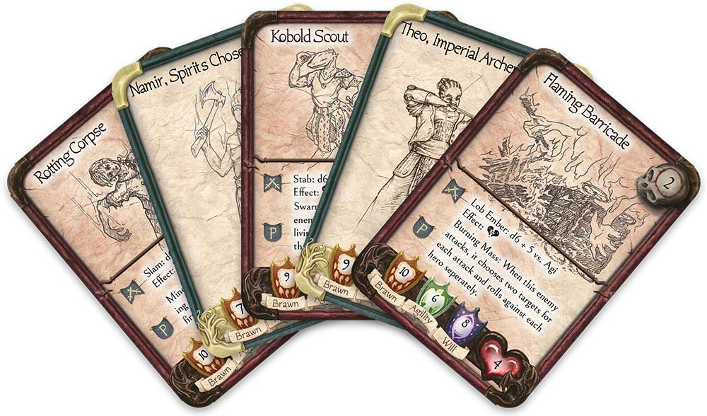

An Adventure Awaits You
No one has heard from the town of Bald Rock.
Right before the town fell silent, a fire ravaged the foothills below the treeless mountain that lends the town its name. It was thought that the Town of Bald Rock was spared, as it was well above the treeline.
Then, there were whispers about a lingering smoke floating over the area, and rumors of kobolds spotted in the hills. No one has come down the winding, rocky path to the town, and all those that have gone up that path looking to check on the town have not returned.
Follow the Adventure
Follow us on social media to see the story continue!